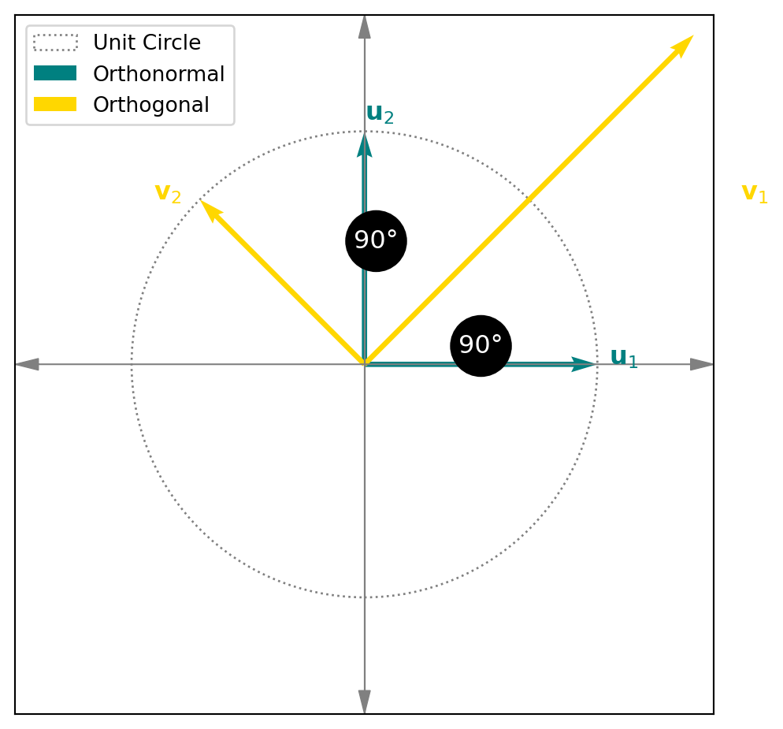
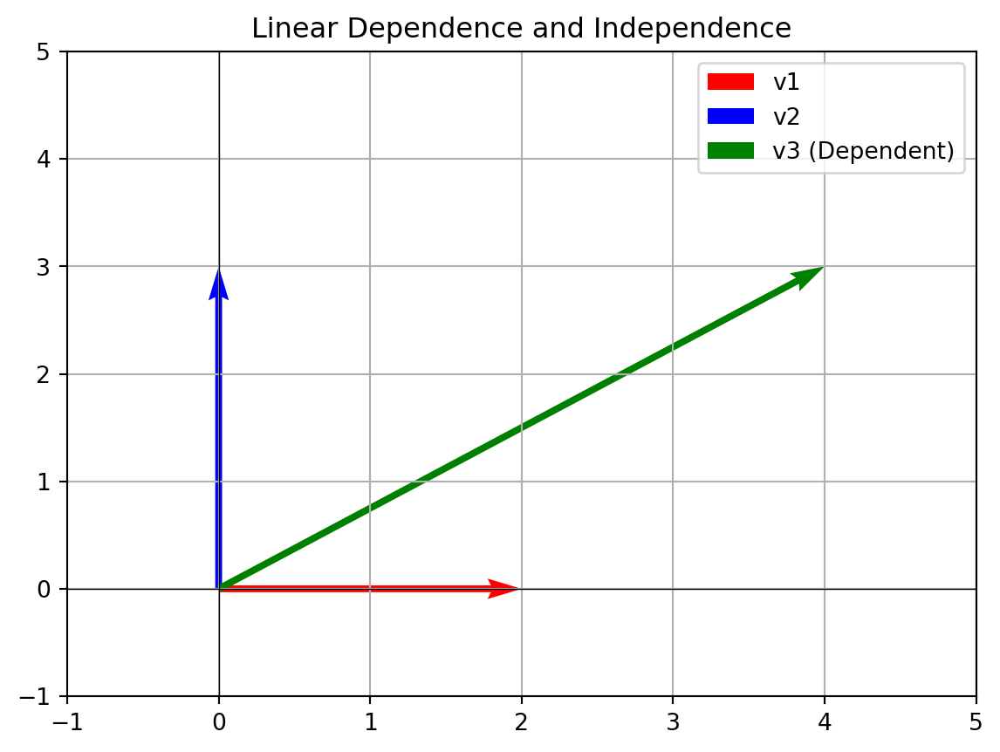

A set of vectors \{u_1, \ldots, u_p\} is an orthogonal set if each pair of distinct vectors is orthogonal. Formally:
\langle u_i, u_j \rangle = 0 \quad \text{whenever } i \neq j.
A set of vectors \{u_1, \ldots, u_p\} is orthonormal if the vectors are pairwise orthogonal and have norm 1. Formally:
\langle e_j, e_k \rangle =
\begin{cases}
0 & \text{if } j \neq k, \\
1 & \text{if } j = k.
\end{cases}
Layman’s Terms: A list of vectors that are all perpendicular to each other and have a length of 1.
1.3 Orthonormal Basis
An orthonormal basis is an orthonormal set of vectors that spans the vector space V. Every orthonormal list with \dim V elements is an orthonormal basis. For example, the standard basis in \mathbb{R}^n is an orthonormal basis.
import matplotlib.pyplot as pltimport numpy as np# Define vectorsu1 = np.array([1, 0])u2 = np.array([0, 1])# Scale one of the orthogonal vectors to have a magnitude greater than 1v1 = np.array([np.sqrt(2), np.sqrt(2)])v2 = np.array([-np.sqrt(2)/2, np.sqrt(2)/2])# Recreate the plot with the corrected orthogonal vectorfig, ax = plt.subplots(figsize=(6, 6))# Draw unit circlecircle = plt.Circle((0, 0), 1, color='gray', fill=False, linestyle='dotted', label="Unit Circle")ax.add_artist(circle)# Plot the vectorsax.quiver(0, 0, u1[0], u1[1], angles='xy', scale_units='xy', scale=1, color='teal', label='Orthonormal')ax.quiver(0, 0, u2[0], u2[1], angles='xy', scale_units='xy', scale=1, color='teal')ax.quiver(0, 0, v1[0], v1[1], angles='xy', scale_units='xy', scale=1, color='gold', label='Orthogonal')ax.quiver(0, 0, v2[0], v2[1], angles='xy', scale_units='xy', scale=1, color='gold')# Add 90° angle markersax.text(0.5, 0.05, "90°", fontsize=12, ha='center', color='white', bbox=dict(boxstyle="circle", color="black"))ax.text(0.05, 0.5, "90°", fontsize=12, ha='center', color='white', bbox=dict(boxstyle="circle", color="black"))# Set limits and aspectax.set_xlim(-1.5, 1.5)ax.set_ylim(-1.5, 1.5)ax.set_aspect('equal')# Add axesax.axhline(0, color='gray', linewidth=0.5)ax.axvline(0, color='gray', linewidth=0.5)ax.arrow(0, 0, 1.4, 0, head_width=0.05, head_length=0.1, fc='gray', ec='gray', linewidth=0.5)ax.arrow(0, 0, 0, 1.4, head_width=0.05, head_length=0.1, fc='gray', ec='gray', linewidth=0.5)ax.arrow(0, 0, -1.4, 0, head_width=0.05, head_length=0.1, fc='gray', ec='gray', linewidth=0.5)ax.arrow(0, 0, 0, -1.4, head_width=0.05, head_length=0.1, fc='gray', ec='gray', linewidth=0.5)# Label vectorsax.text(1.05, 0, r'$\mathbf{u}_1$', fontsize=12, color='teal')ax.text(0, 1.05, r'$\mathbf{u}_2$', fontsize=12, color='teal')ax.text(np.sqrt(2) +0.2, np.sqrt(2)/2, r'$\mathbf{v}_1$', fontsize=12, color='gold')ax.text(-np.sqrt(2)/2-0.2, np.sqrt(2)/2, r'$\mathbf{v}_2$', fontsize=12, color='gold')# Add legendax.legend(loc='upper left', fontsize=10)# Set grid and remove ticksax.grid(False)ax.set_xticks([])ax.set_yticks([])# Show plotplt.show()

3 Theorems and Propositions
3.1 Proposition: Norm Property
If \{e_1, \ldots, e_m\} is an orthonormal set, then for any scalars a_1, \ldots, a_m:
\|a_1e_1 + \ldots + a_me_m\|^2 = |a_1|^2 + \ldots + |a_m|^2.
Why This Works: Orthogonality allows the Pythagorean theorem to hold, letting lengths add independently.
3.2 Corollary
Every orthonormal set is linearly independent.
3.3 Theorem 4: Orthogonal Sets are Independent
An orthogonal set \{u_1, \ldots, u_p\} of nonzero vectors is linearly independent and forms a basis for its span.
Show the code
import numpy as npimport matplotlib.pyplot as plt# Define three vectors, two orthogonal and one linear combinationv1 = np.array([2, 0])v2 = np.array([0, 3])v3 =2* v1 + v2 # Linearly dependent# Plot vectorsplt.quiver(0, 0, v1[0], v1[1], angles='xy', scale_units='xy', scale=1, color='r', label='v1')plt.quiver(0, 0, v2[0], v2[1], angles='xy', scale_units='xy', scale=1, color='b', label='v2')plt.quiver(0, 0, v3[0], v3[1], angles='xy', scale_units='xy', scale=1, color='g', label='v3 (Dependent)')# Add detailsplt.axhline(0, color='black', linewidth=0.5)plt.axvline(0, color='black', linewidth=0.5)plt.grid()plt.legend()plt.xlim(-1, 5)plt.ylim(-1, 5)plt.title('Linear Dependence and Independence')plt.show()

3.4 Theorem 5: Expansion with Orthogonal Basis
For an orthogonal basis \{u_1, \ldots, u_p\}, any vector y in the span of the basis can be written as:
y = c_1u_1 + \cdots + c_pu_p, \quad \text{where } c_j = \frac{\langle y, u_j \rangle}{\langle u_j, u_j \rangle}.
3.5 Theorem 6: Matrix Properties of Orthonormal Columns
For a matrix U with orthonormal columns: - \|Ux\| = \|x\|, - (Ux) \cdot (Uy) = x \cdot y, - Orthogonality is preserved: (Ux) \cdot (Uy) = 0 \iff x \cdot y = 0.
3.6 Orthonormal Expansion (Theorem)
If \{e_1, \ldots, e_n\} is an orthonormal basis of V, then for any vector v \in V:
v = \langle v, e_1 \rangle e_1 + \cdots + \langle v, e_n \rangle e_n,
and:
\|v\|^2 = \sum_{j=1}^n |\langle v, e_j \rangle|^2.
4 Examples
4.1 Example 1: Orthonormal Basis in \mathbb{R}^4
Consider the set:
\left\{\left(\frac{1}{2}, \frac{1}{2}, \frac{1}{2}, \frac{1}{2}\right), \left(\frac{1}{2}, \frac{1}{2}, -\frac{1}{2}, -\frac{1}{2}\right), \left(\frac{1}{2}, -\frac{1}{2}, -\frac{1}{2}, \frac{1}{2}\right), \left(-\frac{1}{2}, \frac{1}{2}, -\frac{1}{2}, \frac{1}{2}\right)\right\}.
This set is orthonormal and forms a basis of \mathbb{R}^4.
4.2 Example 2: Orthogonal Projections
Given vectors u = \begin{bmatrix} 3 \\ -4 \end{bmatrix} and v = \begin{bmatrix} 1 \\ 2 \end{bmatrix}, find \text{proj}_u(v):
\text{proj}_u(v) = \frac{\langle v, u \rangle}{\langle u, u \rangle} u.
5 Visualization
Orthogonal Set: Vectors form right angles.
Orthonormal Basis: Same as orthogonal but scaled to unit length, forming coordinate “axes.”
Would you like specific illustrations, formulas, or extra examples added?